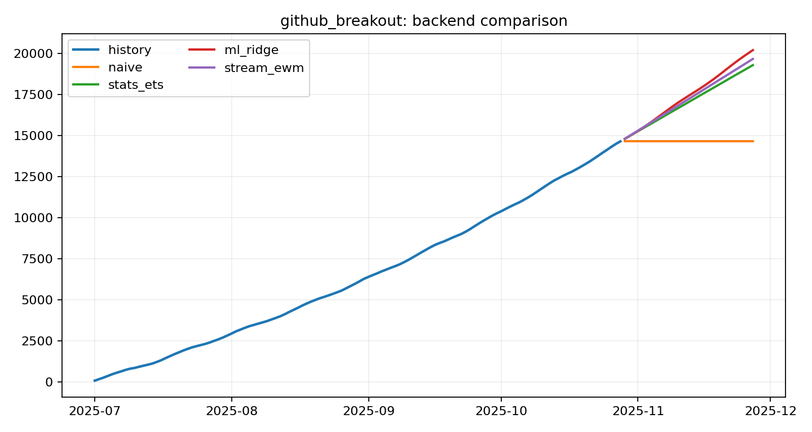
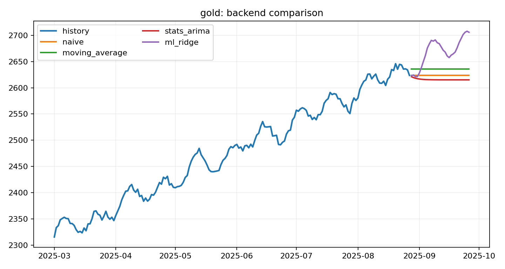
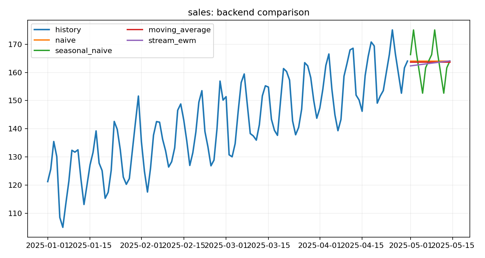

One command, many backends
Route from baseline to classical, tabular, or streaming backends without changing the outer product surface.
A bright, productized surface for scientific forecasting. Compare backends, publish clean artifacts, and expose stable JSON and gallery outputs for humans and agents.
Bright and readable UI, stable artifact contracts, and backend routing make the package feel closer to a premium research product than a loose stack of scripts.
Route from baseline to classical, tabular, or streaming backends without changing the outer product surface.
Every run produces cards, charts, CSV, markdown, and JSON instead of a bare numeric array.
Stable fields such as schema refs, artifact maps, backend selection, warnings, and diagnostics.
Markets, healthcare, scientific operations, climate risk, and repo growth all fit the same pattern.
The gallery builder is opinionated about clarity: clean stats, high-contrast cards, simple code blocks, and obvious links to the underlying artifacts.
Use a dataset id, case id, local CSV, directory, or URL.
Let backend auto-selection compare candidate methods or choose one explicitly.
Get charts, cards, markdown, JSON, and leaderboard artifacts.
Push the static gallery to GitHub Pages or consume the JSON from an agent.
Every card is built from the same product contract: selected backend, transparent metrics, copied artifacts, and a clean path into the case detail page.

github_breakout: ml_ridge won the backend comparison and produced a publishable pack.


The site keeps internal pack evidence visible, while linking out to broader public benchmark hubs instead of pretending that a tiny repo-local score table settles the field.
| Name | Kind | Link |
|---|---|---|
| Monash / ForecastingData repository | dataset hub | https://forecastingdata.org/ |
| Monash baseline evaluation results | baseline results | https://forecastingdata.org/RMSSE.html |
| M4 competition | competition | https://www.unic.ac.cy/iff/research/forecasting/m-competitions/m4/ |
| M5 competition | competition | https://www.unic.ac.cy/iff/research/forecasting/m-competitions/m5/ |
| OpenTS-Bench / OpenTS | leaderboard hub | https://decisionintelligence.github.io/OpenTS/ |
| TFB repository | benchmark codebase | https://github.com/decisionintelligence/TFB |
| GIFT-Eval repository | benchmark | https://github.com/SalesforceAIResearch/gift-eval |
| GIFT-Eval public leaderboard | leaderboard | https://huggingface.co/spaces/Salesforce/GIFT-Eval |
| ForecastBench baseline leaderboard | leaderboard | https://www.forecastbench.org/baseline/ |
| ForecastBench tournament leaderboard | leaderboard | https://www.forecastbench.org/tournament/ |